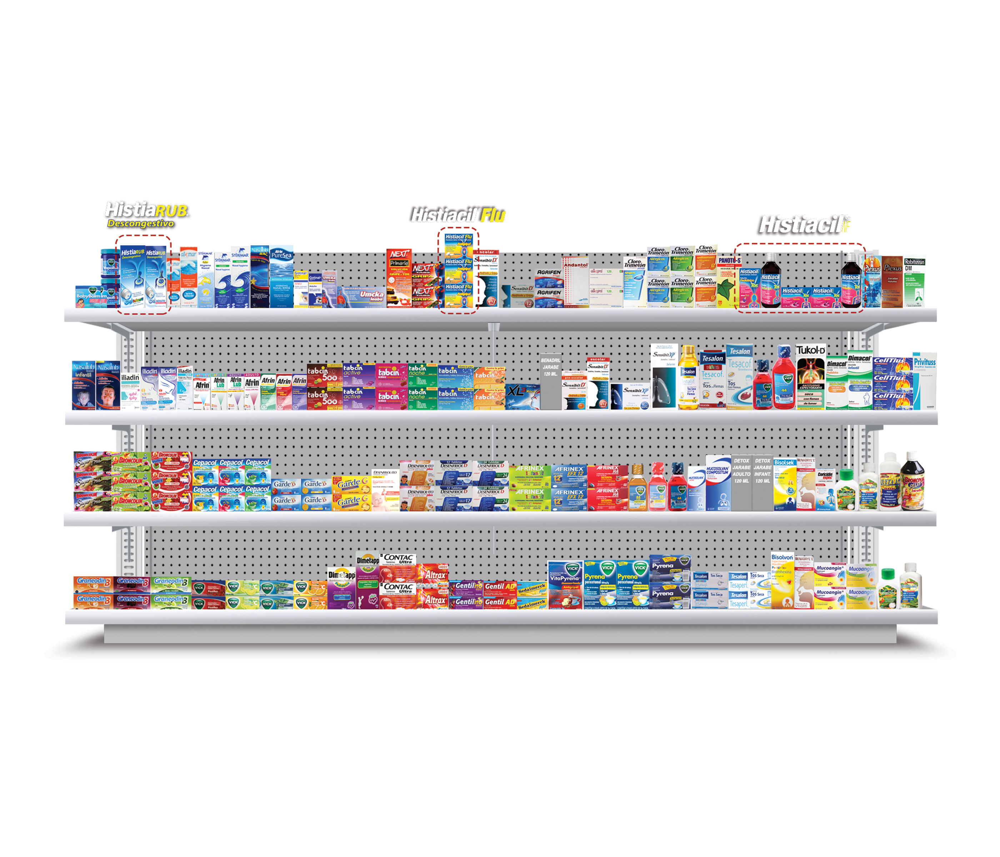

Cadenas Regionales Farmatodo



Información

Información Confidencial, planograma para uso exclusivo de personal Sanofi, la distribución o copia de este documento y/o de la información contenida está estrictamente prohibida. Su difusión será motivo de estricta sanción.